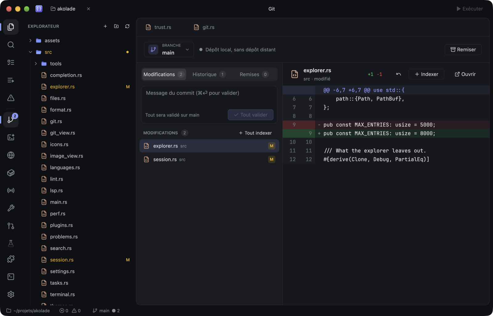
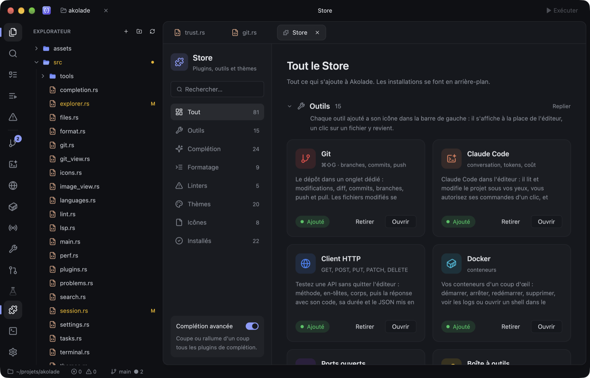

Logiciel libre, écrit en Rust avec gpui, sous licence GPL-3.0
Un éditeur de code natif pour macOS.
Akolade réunit l'éditeur, Git, un terminal, Claude Code et quinze outils de développement dans une seule fenêtre. Il s'ouvre en 0,05 s, reste à 0,3 % de CPU au repos, et n'exécute jamais le code d'un projet que vous n'avez pas approuvé.
macOS, testé sur Apple Silicon. Interface en français.

Fonctionnalités
Ce qu'on attend d'un éditeur moderne, sans extension à chercher : tout est là au premier lancement ou s'installe d'un clic depuis le Store.
-
35 langages colorés
Coloration par tree-sitter, chaque langage avec sa couleur : Python en bleu, Rust en orange, JavaScript en jaune. Deux fichiers côte à côte avec ⌘\, aperçu Markdown à côté du code.
-
Une complétion qui marche sans rien installer
Elle apprend les mots du fichier et les classe selon le contexte. Avec un serveur de langage du Store, elle connaît en plus les méthodes des objets, les types et la documentation, et ajoute l'aller à la définition (F12) et le renommage (F2).
-
Formatage et linters
Prettier, ruff, rustfmt, gofmt, clang-format et quatre autres formateurs sur ⌥⇧F. ESLint, ruff, ShellCheck, hadolint et Clippy soulignent les erreurs pendant la frappe.
-
Git intégré
Modifications avec leur diff, indexation, commit, historique, branches, remises, push et pull. Les lignes modifiées sont marquées dans la marge de l'éditeur.
-
Le projet sous la main
Recherche et remplacement dans tous les fichiers (⇧⌘F), panneau des TODO, scripts de
package.jsonet duMakefile, terminal intégré, bouton Exécuter (⌘R) qui connaît déjà 22 langages. -
20 thèmes et 8 packs d'icônes
Sombres ou clairs, chacun colore aussi le code et le terminal. Un thème VS Code au format JSON s'importe tel quel.
Claude Code, dans un onglet
Si Claude Code est installé sur votre Mac, Akolade en fait une conversation à côté de votre code. C'est votre propre claude qui tourne, avec vos réglages et votre abonnement.
- Chaque action de Claude a sa carte : la commande lancée, le fichier lu, le diff d'une modification. Les onglets ouverts se rechargent dès qu'il modifie un fichier.
- Vous autorisez d'un clic, dans la carte même. Ses questions à choix multiples s'affichent en boutons.
- Quatre modes : Demander, Modifs auto, Plan, et Tout autoriser après confirmation. Le modèle, l'effort et un budget maximum se règlent par défaut dans les paramètres.
- Le coût reste visible : tokens, remplissage du contexte, limites de l'abonnement sur 5 heures et 7 jours, historique des 14 derniers jours.
- Les conversations passées du projet se reprennent d'un clic, même celles de plusieurs milliers de messages.

Quinze outils, au même endroit
Chaque outil ajouté depuis le Store a son icône dans la barre de gauche. Il s'affiche à la place de l'éditeur, et un clic sur un fichier vous y ramène.
| Outil | Ce qu'il fait |
|---|---|
| Client HTTP | Envoie une requête avec ses en-têtes et son corps, affiche le code, la durée et le JSON mis en forme. Les requêtes s'enregistrent dans le projet. |
| Docker | Démarre, arrête ou supprime un conteneur, montre ses logs, ouvre un shell dans le terminal. |
| Kubernetes | Pods, déploiements et services par namespace, avec logs, shell, mise à l'échelle et redirection de port. |
| Tests | Lance cargo, go, pytest, jest ou vitest et montre le message de chaque échec, à un clic du test. |
| Pull requests | Les PR GitHub et GitLab du dépôt, leurs commentaires, l'état des tests et des relectures. |
| Base de données | Les bases SQLite du projet : tables, lignes et requêtes, en lecture seule par défaut. |
| Variables d'environnement | Les fichiers .env en tableau, secrets masqués, variables manquantes par rapport à .env.example. |
| Dépendances | Les paquets npm, Cargo, Python et Go, leurs mises à jour et l'audit de sécurité. Rien n'est jamais installé. |
| Statistiques | Lignes de code par langage, plus gros fichiers, fichiers les plus modifiés et contributeurs. |
| Aperçu en direct | Un serveur local pour vos pages HTML, rechargées à chaque enregistrement. |
| Ports ouverts | Les programmes qui écoutent sur un port de votre Mac, à ouvrir ou à arrêter. |
| Comparateur | Deux textes ou deux fichiers, ligne par ligne ou côte à côte. |
| Boîte à outils | JSON, Base64, URL, JWT, SHA-256, horodatages et UUID. |
Avec Git et Claude Code, cela fait quinze. Le Store propose aussi 24 plugins de complétion, 9 formateurs, 5 linters, 20 thèmes et 8 packs d'icônes.


Ouvrir un projet n'exécute pas son code
Beaucoup d'outils exécutent le code d'un projet dès son ouverture : ESLint lance eslint.config.js, Clippy compile les build.rs, Git suit les commandes de .git/config, Claude Code lance les hooks de .claude/settings.json. Un dépôt cloné ou une archive téléchargée peut en profiter.
Dans Akolade, un dossier ouvert pour la première fois est en mode restreint, signalé dans la barre d'état. Rien de ce qui exécute son code ne démarre : ces linters et certains serveurs de langage attendent, les programmes fournis par le projet ne remplacent jamais les vôtres, et Git se met en pause si le dépôt configure une commande. Claude Code, les tests et les scripts demandent votre accord avant de démarrer.
Un clic sur « Mode restreint » fait confiance au dossier. Akolade s'en souvient, et la liste se gère dans les paramètres.
Akolade n'a ni compte ni télémétrie, et ne se connecte à rien de lui-même.
Performances
L'interface est dessinée sur la carte graphique, depuis un seul processus Rust. Quand la fenêtre passe en arrière-plan, Akolade arrête de relire Git et l'explorateur.
| Mesure | Akolade |
|---|---|
| Lancement jusqu'à l'apparition de la fenêtre | 0,05 s |
| Mémoire, projet ouvert | 174 Mo |
| CPU au repos, fenêtre active ou en arrière-plan | 0,3 % |
| Processus | 1, plus un par serveur de langage utilisé |
| Taille du programme | 73 Mo |
Mesuré sur un MacBook Pro M5 Pro sous macOS 27.0.1, version release, avec le code source d'Akolade ouvert comme projet. Trois lancements ; temps mesuré jusqu'à ce que macOS voie la fenêtre, mémoire (RSS) et CPU relevés avec ps après six secondes d'inactivité.
Installer
Akolade se compile pour l'instant depuis les sources. Il faut un Mac, Rust 1.85 ou plus récent et Git. Xcode n'est pas nécessaire.
-
Installer Rust et Git
Si ce n'est pas déjà fait :
curl --proto '=https' --tlsv1.2 -sSf https://sh.rustup.rs | sh xcode-select --install -
Récupérer le code et le compiler
La première compilation prend quelques minutes.
git clone https://github.com/emmanuellion/akolade.git cd akolade cargo run --release -
Ouvrir un projet
Avec ⇧⌘O, ou directement depuis le terminal :
cargo run --release -- ~/mon-projetNode.js, Claude Code, Docker, kubectl et
ghsont facultatifs. Chaque outil indique ce qui lui manque et comment l'installer.
Essayez Akolade sur vos projets
Libre, sans compte. Il ouvre les dossiers que vous avez déjà.